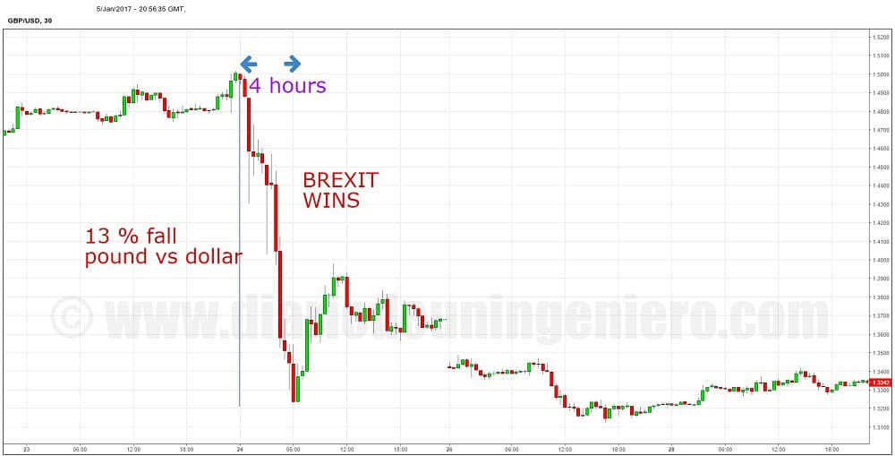
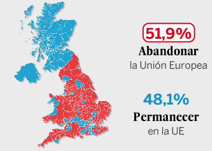

For 2 years Brexit has been plaguing the European market, since there it has always been on the table but the markets have left it parked for this year.
It was the great event of the year since no member of the European Union has never gone and because most of the financial operations in the EU are in London.
The market was fully favorable to the rejection of this separation, since a separation would mean an additional surcharge to the cost of all operations and trade between the island and the community block.
It was supposed than british majority was against the brexit, for sense common but you cannot be never guess people mind, even with the polls.
In the following chart you can see the evolution of the single currency as opposed to the pound in the last two years:
There you can see how the pound gained ground when Greece seemed to be leaving the European Union and euro was at its weakest point.
After the rescue Greece returned to its original level meaning of 1: 0.75.
At the end of the year the soap opera in Greece closed and little by little it was losing ground, as the great electoral date was approaching.
Two months of Brexit betting houses predicted a no-out UK which caused them to fall to the stable level of 1: 0.76.
Brexit's night scrutiny was a hellish night for most half-world brokers as the market discounted a rejection of Brexit that had pushed the pound to record high against the euro.
This triggered an unprecedented pound decline that began in the night market and where the big winners were gold miners companies and the dollar currency.
The euro also was devalued a lot but was rather punctual for the day against the dolar.
Opposite to euro pound in later sessions was about to leave about 20% of its value going from 1: 1.47 in its change against the euro to 1: 1.20.
After the Brexit the pound would fall almost 15% against the euro (a 10% contraction at its least favorable survey levels plus another 5% fall) and 13% against the dollar as you can appreciate in the following chart.

European indexes recorded notable decreases, where without a doubt, one of the most affected would be the IBEX35 as Spain is one of the countries with the highest exports to the United Kingdom.
The German and British indexes would fall 10% to then recover the DAX half of the fall and the FTSE100 to end up positive in later sessions.
However due to the fall of the currency the British's capitalization would fall more than any index.
The IBEX came down 15% and it would take months to recover from the shock.

Most affected companies were undoubtedly the banks, and the airlines , since in the real case of divorce between the EU and UK would be the ones that would really be affected.
Spain in particular would be IAG, which is the merge between British Airwais and Iberia and Santander bank which has almost the same presence as in Spain, as well as Telefonica, with O2 opperating there.
Also the technological ones since after the passage of the time the corrections have remained in these values whereas the rest has returned to its previous values or it has increased them.
The breakdown of the currency would come when the real intentions of the new government unmasked after the resignation of Cameron and the hardest posture against the Brexit.
Last months the tone has been lowered and a judicial decision is expected to know the draft that will have the reforms after the Brexit and the bond that would exist with the EU, establishing a stable level around the GPB/EUR of 1: 0.85.
The real change of attitude of the English was forged with an intense campaign by associations like UKIP and other political parties that made easy slogans to attract the entire population.
Such as the increase in insecurity or crime can be attributed to European citizens when most are British or British from other countries that already have this nationality.

It is very curious that the British are finding their problems facing Europeans when they have been benefiting from trade with the EU since its inception.
We can affirm that 75% of the wealth of the whole country comes from London, and that the capital makes that the social welfare that have all the towns and small towns can carry out.
United Kingdom, last decade has experienced an exponential growth in companies dedicated to technology and research and development.
This has been made possible by the crowd of professionals from outside, whether from the EU or Southeast Asia, countries that were subjected to the British Empire a century ago and with which there was a constant trade and flow of people.
Number of people with origins of India, Pakistan and Bangladesh exceeds 5% of the population and is increasing .
UK has about 15% of immigrants, but what is not counted is that residents with origin from abroad is much larger at around 30% of the total population.
Looking at EU countries the most outstanding is Poland with about 1 million and a half people who emigrated in the last two decades.
Poles as a country with similar weather conditions and the use of English in school have made it a permanent will to find the desired place to live in the UK.
However, the majority of EU countries currently in the labor market are there because of the crisis that has been galloping through southern Europe, such as Spain, Italy or Greece .
Most citizens are in transit and do not harbor that similarity that can occur with the Polish people or some peoples of Eastern Europe.
These countries also give more than they receive and almost the majority are working in sectors that the Brit does not work or where there are professionals , such as technology or medicine.
For this simple reason, in the case that the Brexit is carried out, they can turn everything against them.
Although it is not going to expel the workers that there are active can not cover the demand and when choosing the European citizen can already see not so good to go there.
Also because of pound drop wages are no longer competitive for most and with the current cost of living prevailing it can be counterproductive to work there.
After Brexit, the price increase will come due to the weakness of the currency.
To counter the rise in inflation, the Bank of England will sooner or later be forced to reduce interest rates and print more money for wages to rise and achieve stability.
Shopping malls will switch some EU products to New Zealand or other Common Wealth sites as it may be more profitable.
I still believe that the majority will be as before, but at a higher price and in which the UK will have to work on possible bilateral agreements with the southern partners, especially on products of the agriculture.
Exodus of companies in London and City will carry out a change in which the number of companies in the rest of the world, such as China and India, will increase , and the number of companies in the community will decrease.
For this reason, immigration will continue but more from outside Europe than from inside, and that will have to accustom the British.
Another issue that if carried out the aforementioned Brexit is the independence of its associated states like Scotland and perhaps Northern Ireland.
They will have to cope with this situation as these countries if they were affiliated to the United Kingdom were for the tax and commercial advantages with the rest of European countries since independence would cost them to be inside the EU.
This could generate enough discomfort in the most patriotic Britons who see the end of the remains of what was once the world's largest trading empire.
So far this year the British economy has slowed down, although less than expected, but it is true that Brexit has not yet been implemented or activated, it is pure market speculation.
When change arrive, I believe that all these catalysts, such as prices, may lead to rethinking the vote to more than one.
British index that groups the quotes of the largest UK companies, FTSE100, has increased about 8% despite Brexit and is the index that has risen .
This is due to the benefit that has presented have more competitive prices abroad for a pound cheaper.
But if you compare this index for a dollar capitalization the result is downright negative, depreciating around 2% .
Brexit is currently facing the challenge of knowing whether it will be soft or hard .
Most of the members of "Tory" party, the English right wing, are in favor of softening the discourse to get a pact and to enter the EU's single market.
Government and its representatives are in favor of a hard Brexit that leaves control of all state organs and the ability to take special measures on different issues.
Such as free passage of people from the union and free hands to decide what to do with money Which went to the EU as cohesion funds, headed by the current president, Theresa May.
On Brexit Day, an appeal was lodged with the UK constitutional court against the unilateral decision to sever ties with the union over irregularities committed during the referendum election campaign.
In it the party that supported the Brexit, the UKIP, issued false warnings against what could happen if they were still there and the advantages of being outside.
Mainly in the English social security that calculated that they could earn a huge amount every year, which is totally false.
Cost to the UK of going outside will be of a force difficult to calculate that will put many of the British in trouble during possibly a decade.
Depending on if they work hard To achieve the overall stability in all the terms will be able to obtain a stable system to the margin of the union.
Those lost years are likely to have a geopolitical cost that will cause them to fall into several positions with respect to other countries in the union.
This appeal has finally been won by the citizens who sent it, and in November government appeal to the supreme that has been deliberating in the month of December and whose result will be known in January,
Of that depends on the type of Brexit that is made therefore will have to wait.
If the appeal succeeds the Brexit should be voted on and backed by the British Parliament and the chances of taking the most controversial measures will be quite low.
This will strengthen the pound again and many of the companies punished by the Brexit as banks and airlines will be able to regain their stock market value.
By using this site you agree to our Terms and Conditions. Please Accept these before using the site.
© 2016 - All Rights Reserved - Diseñada por Sergio López Martínez
El sitio se mantiene gracias a la publicidad, por favor Desactiva Adblock para seguir navegando
He desactivado Adblock![[Valid RSS]](https://www.feedvalidator.org/images/valid-rss-rogers.png "Validate my RSS feed")